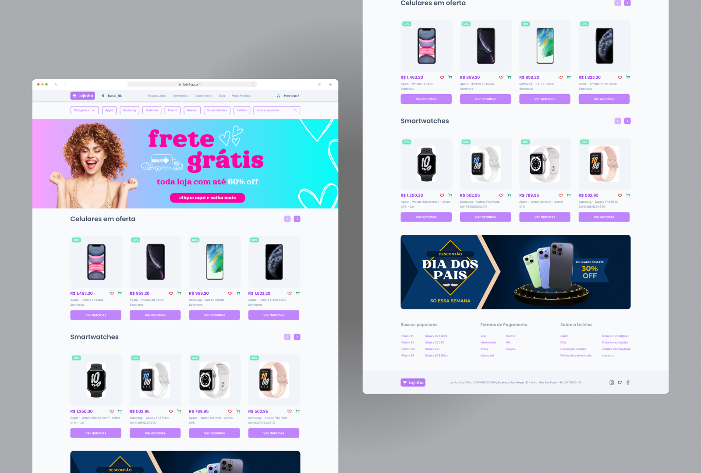
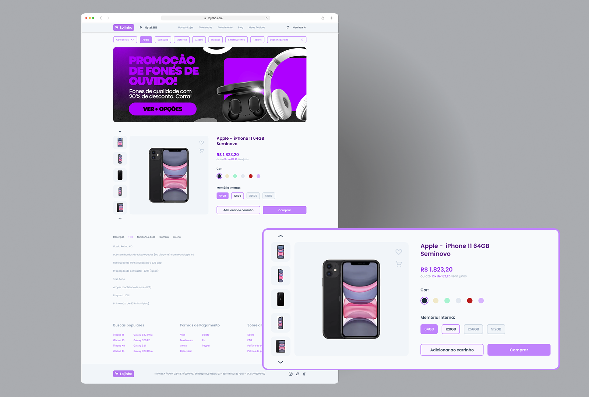
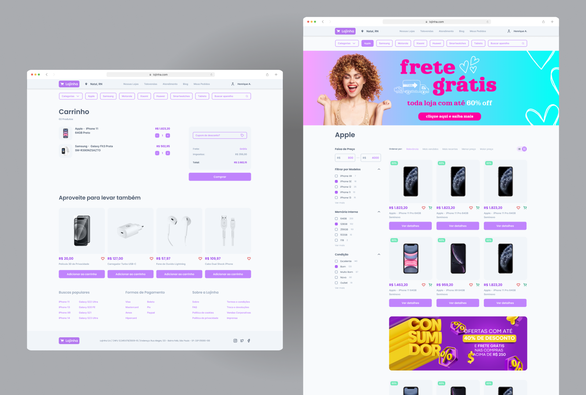

Lojinha
Redesign de e-commerce focado em otimizar a navegação, busca e descoberta de produtos, além de uma jornada de compra simples e eficiente.

Uma jornada de compra pensada para navegação, descoberta e conversão.
O desafio foi redesenhar a experiência de compra em três frentes: a navegação, a busca e a conversão. A plataforma precisava ser simples para usuários casuais e eficiente para compradores frequentes.
A abordagem centrou-se na clareza informacional a cada etapa da jornada. A navegação foi reorganizada com uma taxonomia mais intuitiva, a busca ganhou filtros contextuais e a página de produto foi redesenhada para reduzir fricção até o checkout. Cada decisão de design foi validada por testes de usabilidade e dados de comportamento de compra, tornando a experiência mais fluida e a conversão mais natural.


